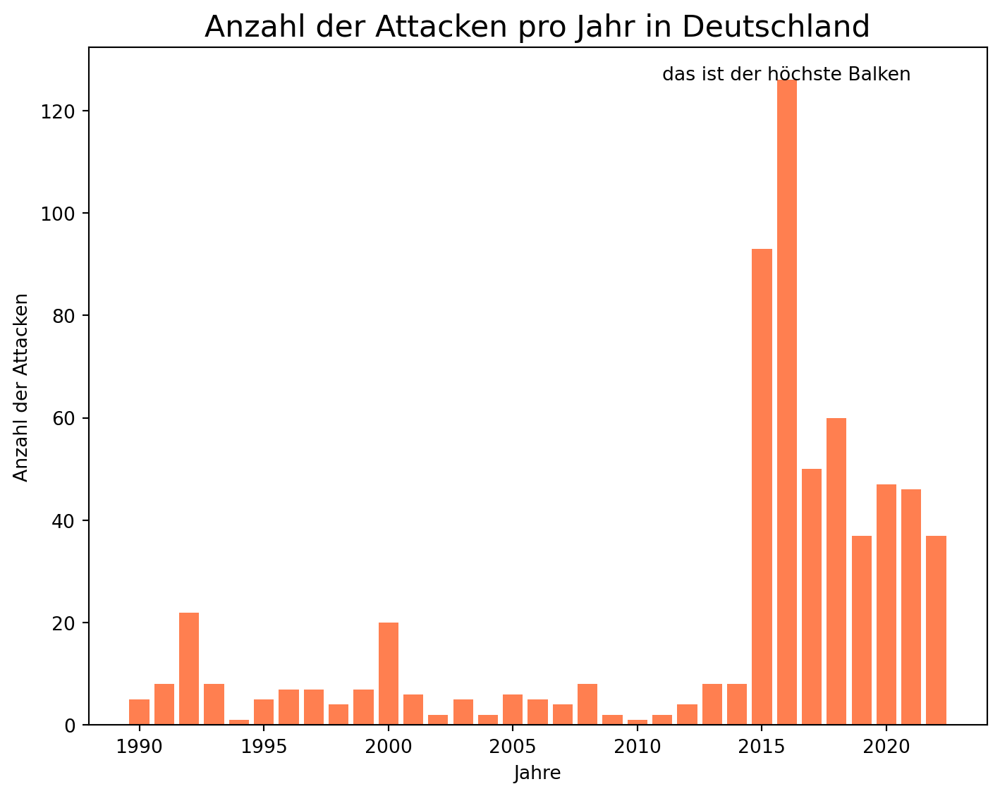
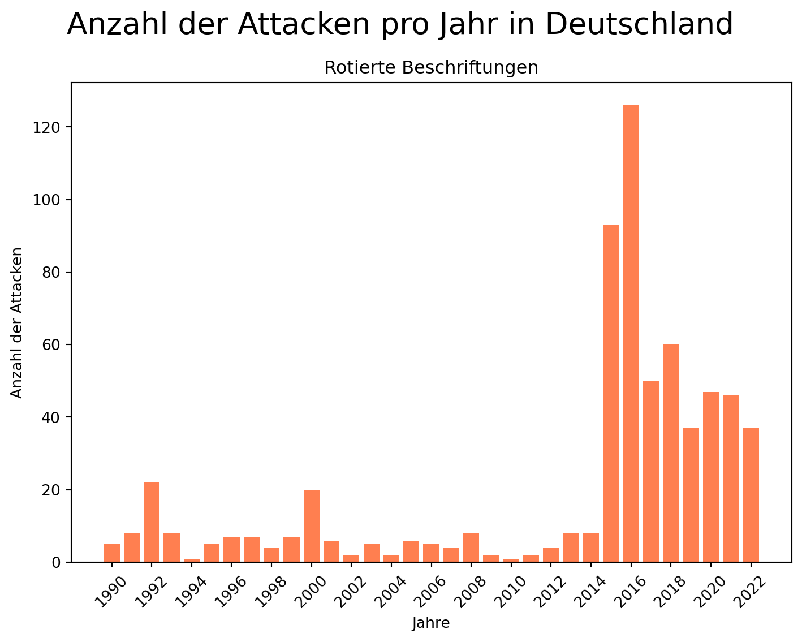
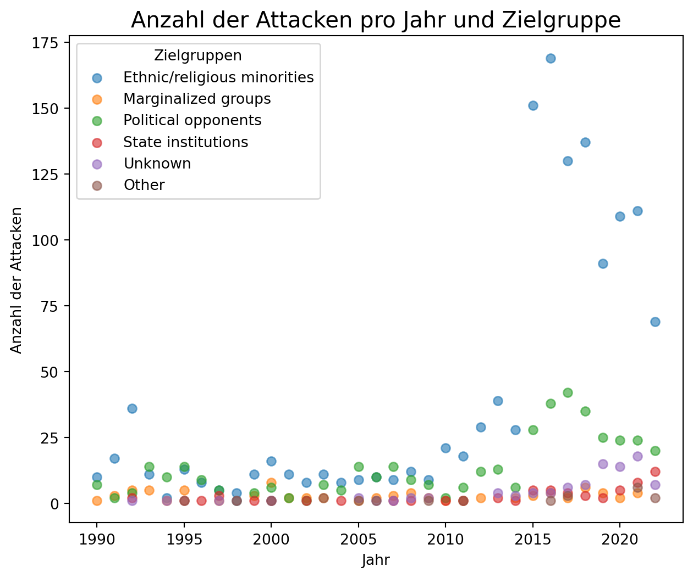
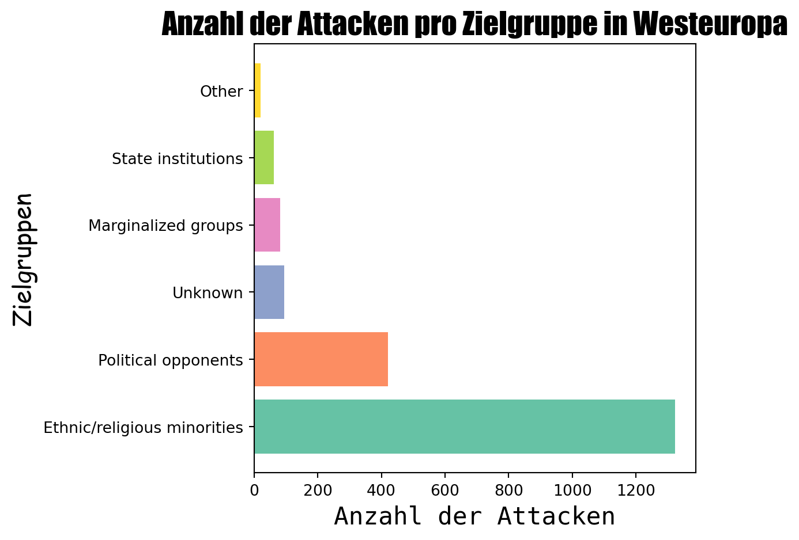

Es gibt verschiedene Arten von Beschriftungen in einem Diagramm, dazu gehören zum Beispiel Achsenbeschriftungen, Titel und Legenden, die wir jeweils individualisieren können.
Text und Beschriftungen einfügen
Die Titel und Achsenbeschriftungen können mit folgenden Funktionen jeweils angepasst werden:
plt.title("Der Titel")
plt.xlabel("Beschriftung der x-Achse")
plt.ylabel("Beschriftung der y-Achse")
Außerdem können wir auch einen Untertitel hinzufügen, dafür benutzen wir zunächst plt.suptitle('Der Haupttitel') für den Haupttitel. Mit plt.title('Der Untertitel') wird dann der Untertitel hinzugefügt.
Um in einer Visualisierung Text an einer bestimmten Stelle einzufügen können wir mithilfe von plt.text(x, y, "beliebiger Text") einen beliebigen Text in Form eines Strings an die Stellen x, y hinzufügen.
Code
import matplotlib.pyplot as pltimport pandas as pd#Einlesen des Datensatzesdf = pd.read_excel('2023-rtv-1990-2022_without-sources.xlsx')# Filtern der Daten für Deutschlanddf_germany = df[df['country_name'] =='Germany']# Zählen der Angriffe pro Jahrattacks_per_year = df_germany.groupby('year').size().reset_index(name='attack_count')# Erstellen des Balkendiagrammsplt.figure(figsize=(7.5, 6))bars = plt.bar(attacks_per_year['year'], attacks_per_year['attack_count'], color='coral')# Hinzufügen von Beschriftungen und Titelplt.xlabel('Jahre')plt.ylabel('Anzahl der Attacken')plt.title('Anzahl der Attacken pro Jahr in Deutschland', fontsize=16)# Finden des höchsten Balkens und Hinzufügen von Textmax_value = attacks_per_year['attack_count'].max()max_year = attacks_per_year[attacks_per_year['attack_count'] == max_value]['year'].values[0]plt.text(max_year, max_value, "das ist der höchste Balken", ha='center')# Anzeigen des Diagrammsplt.tight_layout()plt.show()

Anzahl der Attacken pro Jahr in Deutschland mit eingefügtem Text
Dieses Diagramm zeigt uns die Anzahl der Attacken pro Jahr in Deutschland, zudem haben wir an dem höchsten Balken noch einen Text eingefügt. Dies funktioniert mit der Funktion plt.text(max_year, max_value, "das ist der höchste Balken", ha='center'). Die Variablen max_year und max_value sind die Koordinaten des höchsten Balkens, an dem wir den Text haben wollen. Mithilfe von ha='cneter' haben wir noch die Position angepasst, sodass der Text mittig erscheint.
Beschriftungen rotieren
Um Beschriftungen für eine bessere Lesbarkeit zu rotieren können wir die Funktion plt.xticks() mit dem Parameter rotation verwenden.
Code
import matplotlib.pyplot as pltimport pandas as pd#Einlesen des Datensatzesdf = pd.read_excel('2023-rtv-1990-2022_without-sources.xlsx')# Filtern der Daten für Deutschlanddf_germany = df[df['country_name'] =='Germany']# Zählen der Angriffe pro Jahrattacks_per_year = df_germany.groupby('year').size().reset_index(name='attack_count')# Erstellen des Balkendiagrammsplt.figure(figsize=(7.5, 6))bars = plt.bar(attacks_per_year['year'], attacks_per_year['attack_count'], color='coral')# Hinzufügen von Beschriftungen und Titelplt.xlabel('Jahre')plt.ylabel('Anzahl der Attacken')plt.suptitle('Anzahl der Attacken pro Jahr in Deutschland', fontsize=20)plt.title('Rotierte Beschriftungen')# Anpassung der x-Achse Ticks und Beschriftungenplt.gca().set_xticks(attacks_per_year['year'][::2]) # EIn Strich alle 2 Jahreplt.xticks(rotation=45) # Rotieren um 45 Grad# Anzeigen des Diagrammsplt.tight_layout()plt.show()

Anzahl der Attacken pro Jahr in Deutschland
In diesem Diagramm haben wir die x-Achsenbeschriftung mit plt.xticks(rotation=45) um 45 Grad rotiert, um die Jahreszahlen lesbarer zu gestalten.
Die Legende
Eine verständliche und lesbare Legende ist sehr wichtig. Mit plt.legend() können wir eine Legende erstellen, die automatisch an die beste Stelle gesetzt wird, sodass sie die Daten nicht verdeckt.
Wenn wir die Legende an einer anderen Stelle haben wollen, können wir den Paramter loc verwenden: plt.legend(loc="lower left"). Dabei können wir loc Werte wie "upper", "lower", "center", "left", und "right" übergeben, um die Position anzupassen. Die automatisch voreingestellte Position ohne Parameter ist übrigens identisch zu plt.legend(loc="best").
Code
import matplotlib.pyplot as pltimport pandas as pd#Einlesen des Datensatzesdf = pd.read_excel('2023-rtv-1990-2022_without-sources.xlsx')# Gruppieren nach Jahr und Zielgruppe und Zählen der Attacken pro Jahr und Zielgruppeincident_counts = df.groupby(['year', 'grouped_target_group']).size().reset_index(name='incident_count')# Scatterplot erstellenplt.figure(figsize=(7.5, 6))# Scatterplot für die Anzahl der Vorfälle pro Jahr und Zielgruppefor target_group in incident_counts['grouped_target_group'].unique(): group_data = incident_counts[incident_counts['grouped_target_group'] == target_group] plt.scatter( group_data['year'], group_data['incident_count'], alpha=0.6, label=target_group )# Achsenbeschriftungen und Titel hinzufügenplt.xlabel('Jahr')plt.ylabel('Anzahl der Attacken')plt.title('Anzahl der Attacken pro Jahr und Zielgruppe', fontsize=15)#Hinzufügen der Legende plt.legend(title='Zielgruppen', loc="upper left", fontsize=10)# Plot anzeigenplt.show()

Anzahl der Attacken pro Jahr und Zielgruppe
In diesem Scatterplot haben wir die Anzahl der Attacken pro Zielgruppe und Land visualisiert. Mithilfe von plt.legend(title='Zielgruppen', loc="upper left", fontsize=10) haben wir dann eine Legende mit Titel, angepasster Position und Schriftgröße eingefügt.
Schriftarten und Größen
Durch den Parameter fontsize kann die Schriftgröße von Text angepasst werden. Um die Schriftart zu ändern können wir dem Parameter family einen String mit dem Namen einer Schriftart übergeben.
Code
import matplotlib.pyplot as pltimport pandas as pd# Einlesen des Datensatzesdf = pd.read_excel('2023-rtv-1990-2022_without-sources.xlsx')# Berechne die Anzahl der Attacken pro Zielgruppetarget_group_counts = df['grouped_target_group'].value_counts().reset_index()target_group_counts.columns = ['grouped_target_group', 'attack_count']# Erstellen des Balkendiagramms mit einer Colormapplt.figure(figsize=(6.5, 5))plt.barh(target_group_counts['grouped_target_group'], target_group_counts['attack_count'], color=plt.cm.Set2(range(len(target_group_counts))))# Hinzufügen von Beschriftungen und Titelplt.xlabel('Anzahl der Attacken', fontsize=16, family='monospace')plt.ylabel('Zielgruppen', fontsize=16, family='cursive')plt.title('Anzahl der Attacken pro Zielgruppe in Westeuropa', fontsize=20, family='fantasy')# Anzeigen des Diagrammsplt.tight_layout()plt.show()

Anzahl der Attacken pro Zielgruppe
Hier haben wir ein Diagramm mit verschiedenen Schriftgrößen und Schriftarten erstellt, dabei können wir die Parameter fontsize und family allen Text-Funktionen übergeben.
Global kann die Schrift für das gesamte Jupyter-Notebook auch mit plt.rc("font", family="serif", size=20) angepasst werden, dann haben alle Texte in unseren Visualisierungen die gleichen Schriftanpassungen.
Es gibt auch noch ganz viele weitere Schriftarten, hier befindet sich eine Liste mit Beispielen.